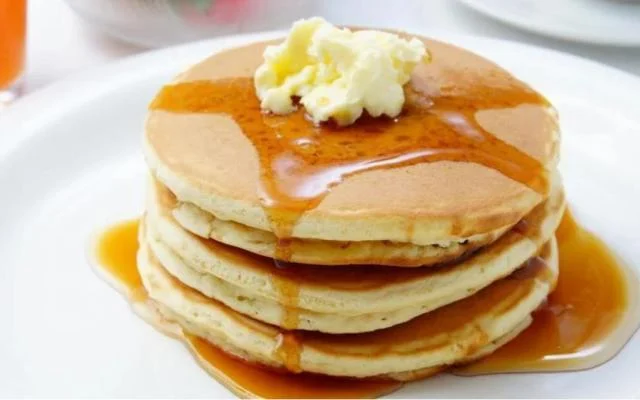

Home
panqueca americana

descrição
quem não ama panqueca americana nunca provou panqueca americana.
venha se deliciar preparando uma panqueca diretamente do norte global.
ingredientes (8 porções)
- 3 colheres (chá) de fermento em pó
- 2 colheres (sopa) de manteiga derretida
- 2 ovos levemente batidos
- 1 e 1/4 xícara (chá) de farinha de trigo
- 1 xícara (chá) de leite
- 1 colher (sopa) de açúcar
- pitada de sal
- óleo
preparo
- misture em um recipiente: a farinha, o açúcar, o fermento e o sal
- em outro recipiente, misture os ovos, o leite e a manteiga
- acrescente os líquidos aos secos, sem misturar em excesso
- o ponto da massa não deve ser muito líquido, deve escorrer lentamente
- aqueça e unte a frigideira com óleo, coloque a massa no centro, cerca de 1/4 xícara por panqueca
- vire a massa para assar do outro lado e está pronto